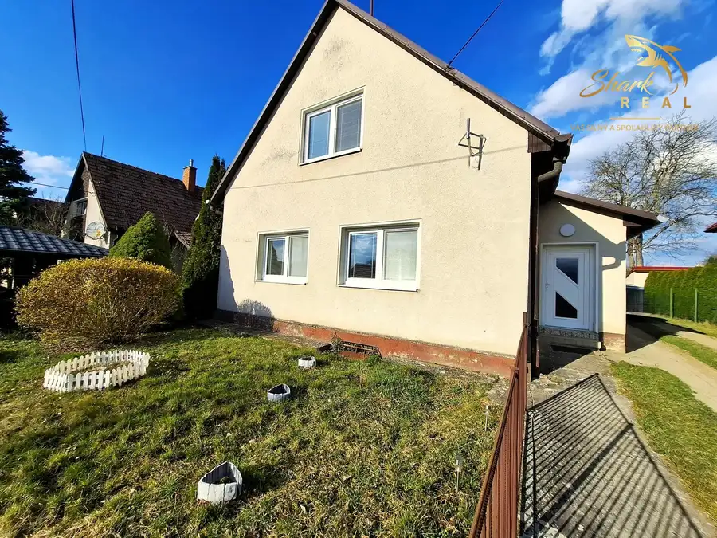
Aktuálna ponuka
12 nehnuteľností, predovšetkým rodinné domy, byty, pozemky. Každá má vlastnú stránku s fotkami, popisom a mapou.
Prezrieť ponukuMarta ĽahkáRealitná maklérka
Realitná maklérka · Shark real s. r. o.
Predaj a prenájom nehnuteľností · Trenčín, Dubnica nad Váhom, Trenčianske Stankovce
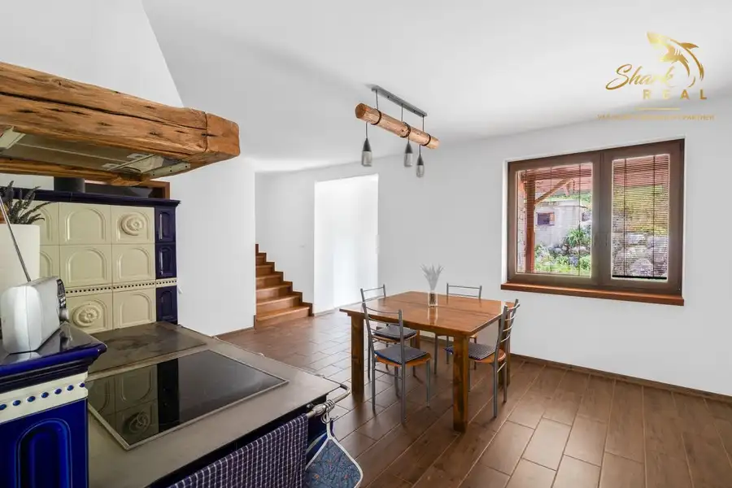
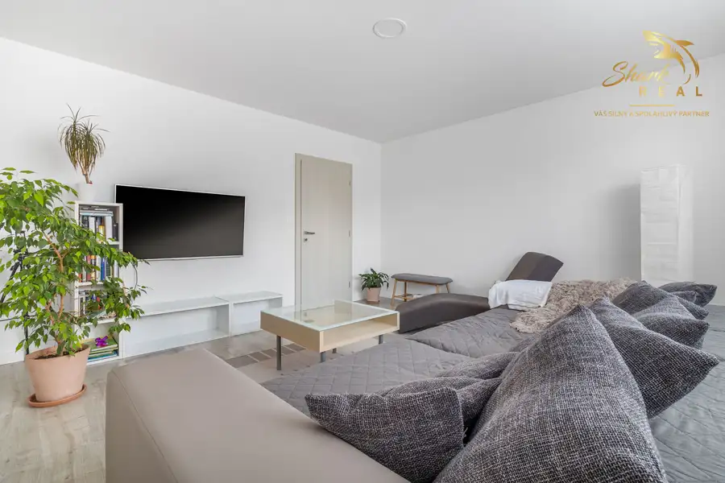
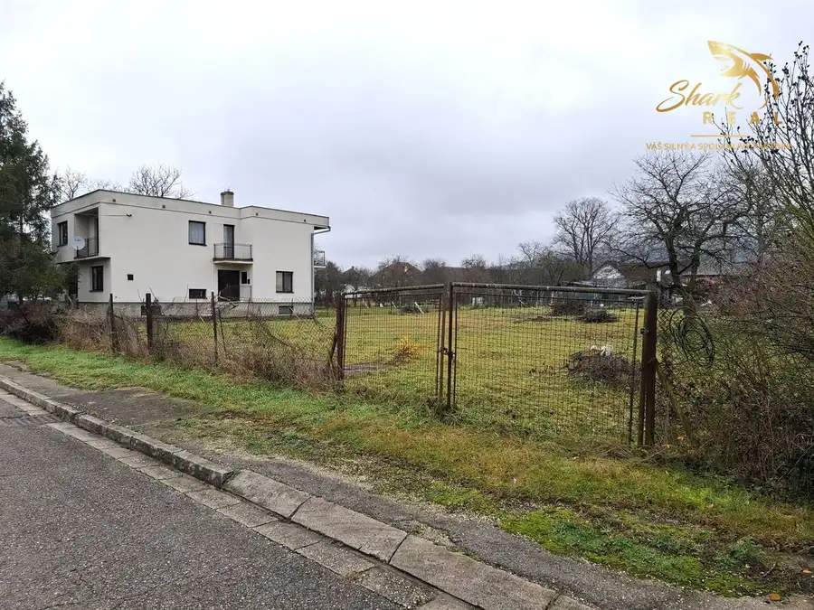
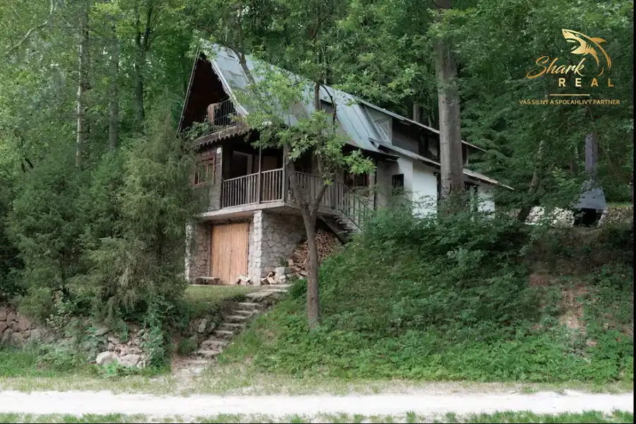
Chata, drevenica, zrub3 182 000 €Krásna chatka na predaj V prostredí Bielych Karpát Nová Bošáca 100 m² Rekreačná chata v krásnom prostredí Bielych Karpát Ponúkame na predaj rekreačnú chatu situovanú v pokojnom a malebnom prostredí Bielych Karpát, v…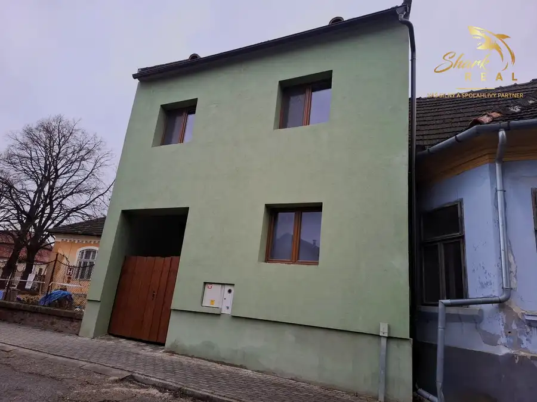
Dom10 265 000 €Investičná príležitosť s možnosťou samostatného bývania Ilava 291 m² SHARK REAL Vám ponúka na nehnuteľnosť vhodnú na podnikanie zabezpečujúce ubytovanie spojené s vlastnou bytovou jednotkou nachádzajúcu sa v okresnom…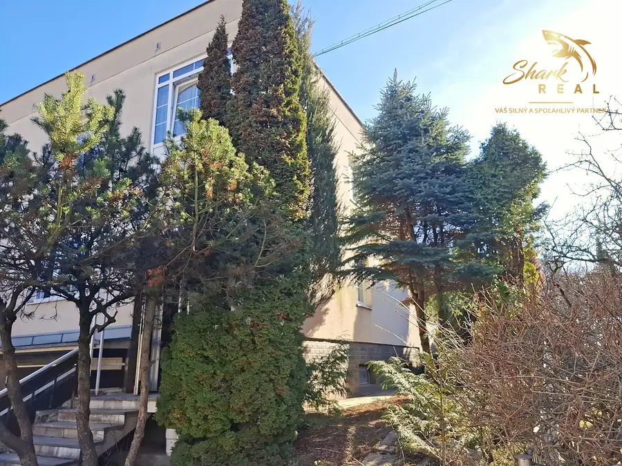
Dom10 236 000 €Dom za super cenu vo vyhľadávanej lokalite Nová Dubnica 258 m² SHARK REAL Vám ponúka na predaj 3 izbový rodinný dom s upravenou záhradou a skleníkom v Novej Dubnici. Dom so zastavanou plochou 86m2 bol postavený v…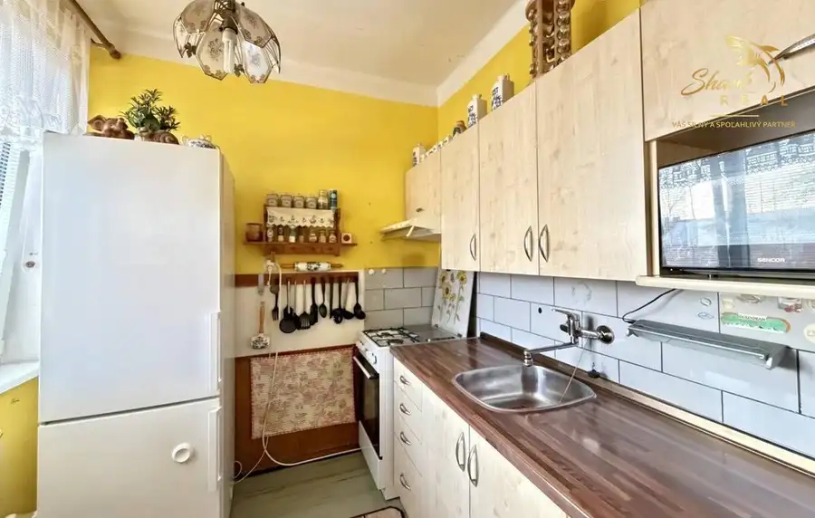
Byt5 149 000 €Na predaj 3-izbový byt v pôvodnom stave Trenčín 3-izbový65 m²2. podlažie Vytvorte si vaše bývanie snov!SHARK REAL Vám ponúka na predaj 3 - izbový byt s v pôvodnom stave vo vyhľadávanej lokalite na Bazovského ulici v…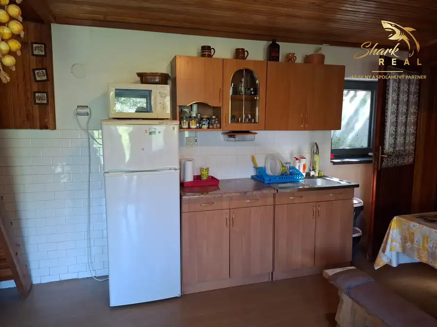
Dom10 45 000 €Útulný domček v tichom prostredí Kálnica 90 m² Ponúkame Vám na predaj domček v obci Kálnica.Nachádza sa v tichej časti nad obcou a je prístupný z obecnej cesty. Bol postavený v roku 1976. Je…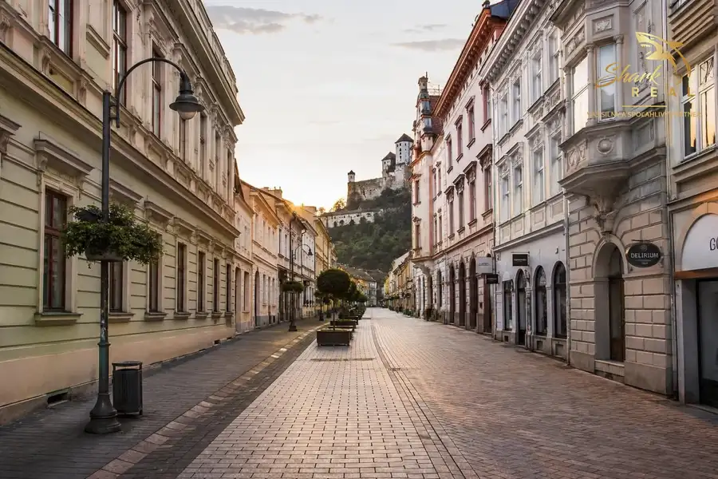
BytNové Cena dohodouPrenájom 1i byt na Sihoti Trenčín 1-izbový35 m²1. podlažie Shark real Vám ponúka na prenájom zariadený 1-izbový byt na Hurbanovej ulici v Trenčíne. Kuchyňa vybavená kuchynskou linkou, mikrovlnkou, sporákom,…Tomuto výberu zatiaľ nezodpovedá žiadna ponuka. Napíšte mi, čo hľadáte.
Volám sa Marta Ľahká. Som realitná maklérka kancelárie Shark real s. r. o. a pôsobím predovšetkým v lokalitách Trenčín, Dubnica nad Váhom, Trenčianske Stankovce a Kálnica (Trenčiansky kraj).

12 nehnuteľností, predovšetkým rodinné domy, byty, pozemky. Každá má vlastnú stránku s fotkami, popisom a mapou.
Prezrieť ponuku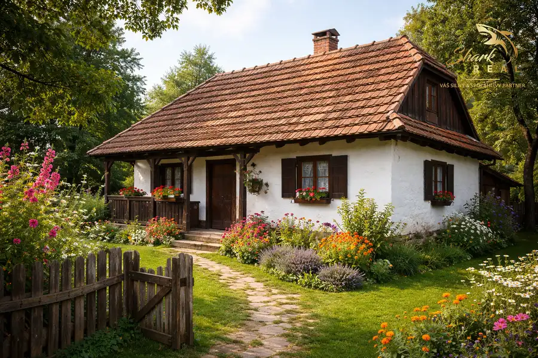
Trenčín, Dubnica nad Váhom, Trenčianske Stankovce, Kálnica, Stará Lehota a okolie. Ponuku si môžete prezrieť podľa lokality.
Nehnuteľnosti v lokalite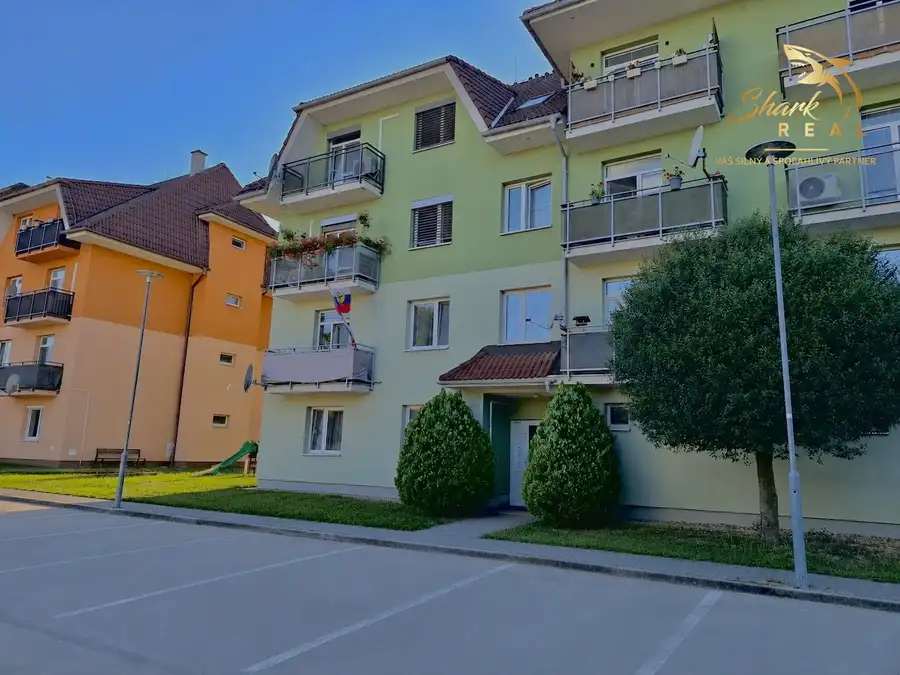
Odhad trhovej ceny, príprava prezentácie, obhliadky, zmluvy a odovzdanie nehnuteľnosti.
Dohodnúť stretnutieKaždý špendlík je jedna nehnuteľnosť z mojej ponuky. Kliknite a pozrite sa.
© prispievatelia OpenStreetMap
Na čo sa pýtate najčastejšie, skôr než sa stretneme.
Odhad trhovej ceny vychádza z aktuálnych ponúk a predajov v lokalite, nie z cenníkových tabuliek. Podmienky Vám poviem pri prvom telefonáte.
Najprv obhliadka a odhad ceny, potom príprava prezentácie (fotografie, popis, inzercia), obhliadky so záujemcami, rezervačná zmluva, kúpna zmluva, návrh na vklad do katastra a odovzdanie nehnuteľnosti. O každom kroku viete vopred.
Najrýchlejšie cez WhatsApp alebo telefón. Termín stretnutia alebo obhliadky dohodneme podľa Vás.